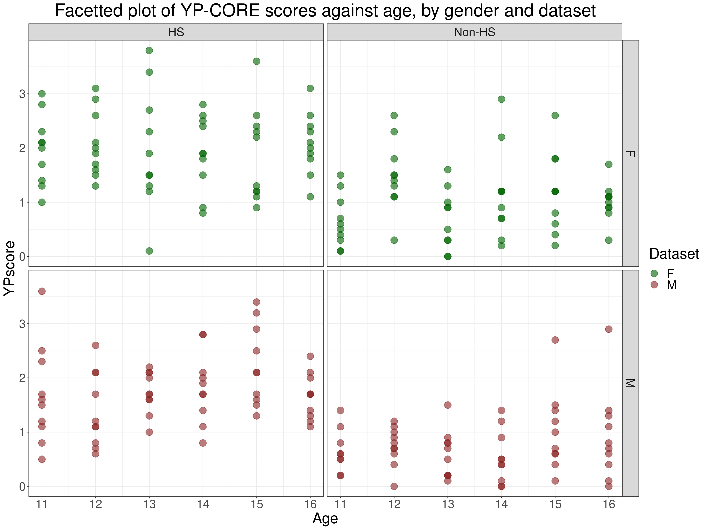
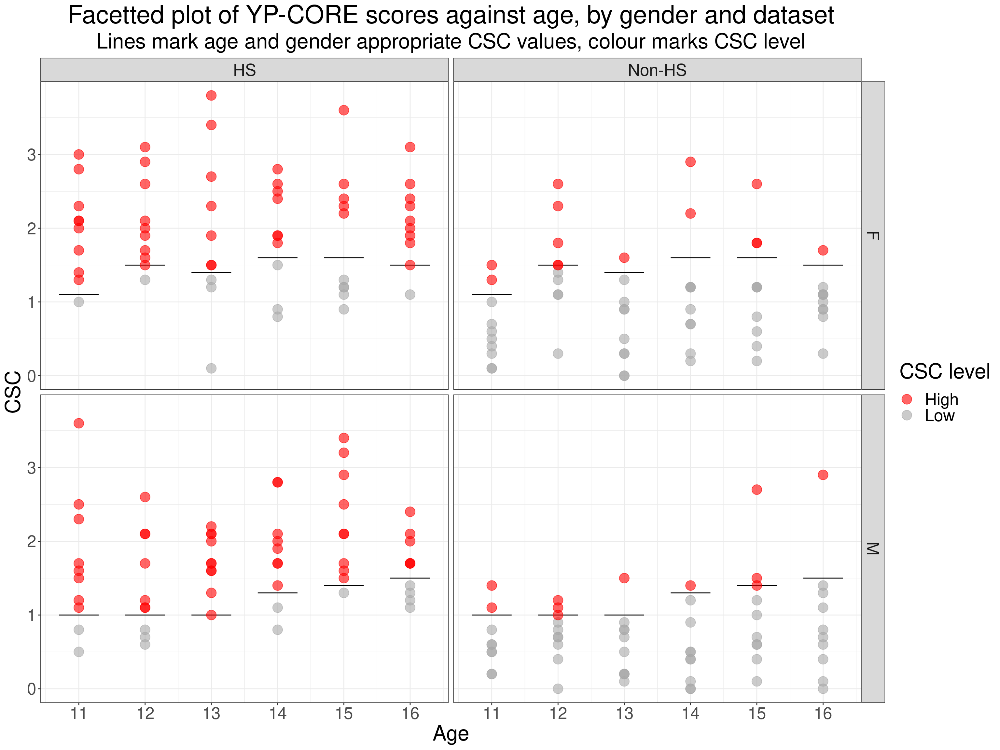
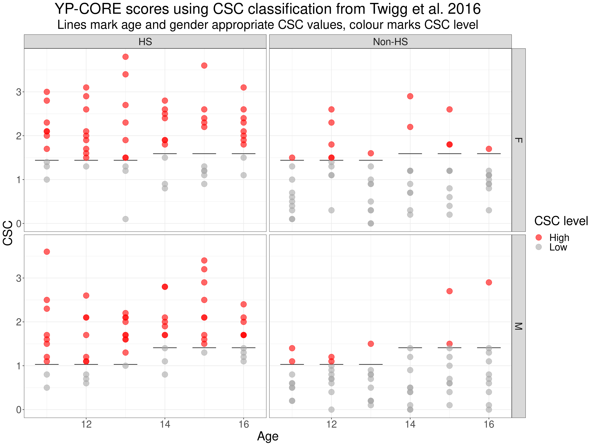
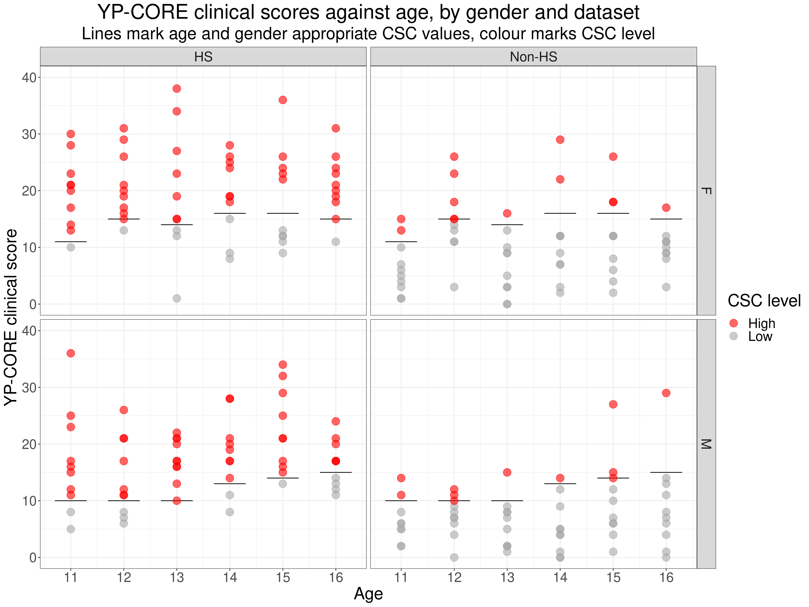

CSC matching lookup with lookupCSCgenderAndAge()
Empirical data suggests that for some measures, particularly those used in adolescence, the cutting points between help-seeking and non-help-seeking scores need to be different for different ages and genders. I have created this function lookupCSCgenderAndAge() to go into the package CECPfuns to make it easy(ish) for people to take a dataset which includes age and gender variables and return the dataset with the correct cutting point for each row created by looking up the age and gender in a lookup table.
I’ve written the function with the YP-CORE in mind and presuming that the cut off point is a CSC (Clinical Change Criterion) so the function currently has an internal lookup table with referential CSCs for the YP-CORE in the UK and Ireland, or for Italy. However, the function could be used for any measure and any cutting point and it is written to be able to read any table containing age, gender and cutting point variables.
Here’s a lookup table based on Dr. Emily Blackshaw’s PhD data. I’m using the item mean scoring there.
tribble(~Ref, ~Age, ~Gender, ~CSC,
"Emily_PhD", 11, "M", 1.0,
"Emily_PhD", 12, "M", 1.0,
"Emily_PhD", 13, "M", 1.0,
"Emily_PhD", 14, "M", 1.3,
"Emily_PhD", 15, "M", 1.4,
"Emily_PhD", 16, "M", 1.5,
"Emily_PhD", 11, "F", 1.1,
"Emily_PhD", 12, "F", 1.5,
"Emily_PhD", 13, "F", 1.4,
"Emily_PhD", 14, "F", 1.6,
"Emily_PhD", 15, "F", 1.6,
"Emily_PhD", 16, "F", 1.5,
"Twigg_et_al_2016", 11, "M", 1.03,
"Twigg_et_al_2016", 12, "M", 1.03,
"Twigg_et_al_2016", 13, "M", 1.03,
"Twigg_et_al_2016", 14, "M", 1.41,
"Twigg_et_al_2016", 15, "M", 1.41,
"Twigg_et_al_2016", 16, "M", 1.41,
"Twigg_et_al_2016", 11, "F", 1.44,
"Twigg_et_al_2016", 12, "F", 1.44,
"Twigg_et_al_2016", 13, "F", 1.44,
"Twigg_et_al_2016", 14, "F", 1.59,
"Twigg_et_al_2016", 15, "F", 1.59,
"Twigg_et_al_2016", 16, "F", 1.59,
"Di_Biase_et_al_2021", 11, "F", 1.34,
"Di_Biase_et_al_2021", 12, "F", 1.34,
"Di_Biase_et_al_2021", 13, "F", 1.34,
"Di_Biase_et_al_2021", 14, "F", 1.34,
"Di_Biase_et_al_2021", 15, "F", 1.47,
"Di_Biase_et_al_2021", 16, "F", 1.47,
"Di_Biase_et_al_2021", 17, "F", 1.47,
"Di_Biase_et_al_2021", 11, "M", 1.18,
"Di_Biase_et_al_2021", 12, "M", 1.18,
"Di_Biase_et_al_2021", 13, "M", 1.18,
"Di_Biase_et_al_2021", 14, "M", 1.18,
"Di_Biase_et_al_2021", 15, "M", 1.23,
"Di_Biase_et_al_2021", 16, "M", 1.18,
"Di_Biase_et_al_2021", 17, "M", 1.18) -> tibCSClookup
tibCSClookup %>%
filter(Ref == "Emily_PhD") %>%
flextable() %>%
colformat_double(digits = 1)Ref | Age | Gender | CSC |
|---|---|---|---|
Emily_PhD | 11.0 | M | 1.0 |
Emily_PhD | 12.0 | M | 1.0 |
Emily_PhD | 13.0 | M | 1.0 |
Emily_PhD | 14.0 | M | 1.3 |
Emily_PhD | 15.0 | M | 1.4 |
Emily_PhD | 16.0 | M | 1.5 |
Emily_PhD | 11.0 | F | 1.1 |
Emily_PhD | 12.0 | F | 1.5 |
Emily_PhD | 13.0 | F | 1.4 |
Emily_PhD | 14.0 | F | 1.6 |
Emily_PhD | 15.0 | F | 1.6 |
Emily_PhD | 16.0 | F | 1.5 |
if (!interactive()) {
load(file = "exampleData")
} else {
load(file = "./_posts/2024-01-21-lookupcsc2/exampleData")
}To explore the function I am using a very, very anonymised and restricted dataset of 239 rows. Scores shown here.
vecColoursDatasetDataset2 <- c("HS" = "darkviolet", "Non-HS" = "aquamarine3")
vecColoursDataset <- c("Help-seeking" = "darkviolet", "Non-help-seeking" = "aquamarine3")
vecColoursGender2 <- c("F" = "darkgreen", "M" = "brown4")
vecColoursCSClevel <- c("High" = "red", "Low" = "darkgrey")
ggplot(data = tibData,
aes(x = Age, y = YPscore, colour = Gender)) +
facet_grid(rows = vars(Gender), cols = vars(Dataset2)) +
geom_point(size = 5,
alpha = .6) +
scale_color_manual("Dataset",
values = vecColoursGender2) +
ggtitle("Facetted plot of YP-CORE scores against age, by gender and dataset")
The next table shows a subset of that full dataset that is returned if I point the the lookupCSCgenderAndAge() function at those data and use the default internal lookup. Hit the “Show code” button to see the arguments in the call to the function. I’ve annotated them to explain them.
### use the function to generate data (which I have put into tmpTib) containing the CSC values mapped from the lookup table
lookupCSCgenderAndAge(useInternalLookup = TRUE, # so using the internal lookup data (could have omitted this, it's the default)
lookupTableName = NULL, # so no need to give an external lookup table name (could have omitted this, it's the default)
lookupGenderVarChar = "Gender", # name of the gender variable in the lookup table (could have omitted this, it's the default)
lookupAgeVarChar = "Age", # name of the age variable ditto (again could have omitted this, it's the default)
lookupGenderF = "F", # code for female gender in the lookup table (could have omitted this, it's the default)
lookupGenderM = "M", # code for male gender ditto
lookupGenderO = "O", # code for other gender ditto (lookup table currently has no CSCs for other gender)
### now the arguments about the data to code
dataTableName = tibData, # crucial name of the data to classify, this and the following
dataGenderVarChar = "Gender", # name of the gender variable in those data (could have omitted this, it's the default)
dataAgeVarChar = "Age", # you can work out this and the following
dataGenderF = "F",
dataGenderM = "M",
dataGenderO = "O",
### no missing values in lookup tables (would be meaningless), but you may have missing values in your data
dataGenderNA = NA_character_) -> tibBlackshaw # so that call returns the raw data but now with the CSC valuesThese referential data had CSC values for age by year from 11 to 16 years oldID | Gender | Age | YPscore | Ref | CSC |
|---|---|---|---|---|---|
1 | M | 11 | 1.1 | Emily_PhD | 1.0 |
1 | M | 12 | 2.6 | Emily_PhD | 1.0 |
1 | M | 13 | 2.2 | Emily_PhD | 1.0 |
1 | M | 14 | 1.4 | Emily_PhD | 1.3 |
1 | M | 15 | 1.6 | Emily_PhD | 1.4 |
1 | M | 16 | 2.4 | Emily_PhD | 1.5 |
1 | F | 11 | 1.3 | Emily_PhD | 1.1 |
1 | F | 12 | 3.1 | Emily_PhD | 1.5 |
1 | F | 13 | 2.3 | Emily_PhD | 1.4 |
1 | F | 14 | 2.5 | Emily_PhD | 1.6 |
1 | F | 15 | 2.4 | Emily_PhD | 1.6 |
1 | F | 16 | 2.4 | Emily_PhD | 1.5 |
One thing you can see there (immediately above) is that the function defaults to give you a message about the lookup data being used.
I’ve filtered to show just the first help-seeking dataset member for each of the age and gender combinations and you can see that these have been mapped to the correct CSC values for those genders and ages.
As we were using the defaults for the lookup all the lookup arguments there could have been omitted but I put them in to make this post more comprehensive.
Having the correct CSC values allowed me to code the CSC status of each person and to plot the scores for all the participants against showing their CSC categories and the CSC values for each age and gender: as shown next.
### use the CSC values to get CSC levels
tibBlackshaw %>%
mutate(CSClevel = if_else(YPscore >= CSC, "High", "Low")) -> tibBlackshaw
### modify the lookup to get the correct data for the plot
tibCSClookup %>%
filter(Ref == "Emily_PhD") %>%
mutate(Dataset2 = "HS") -> tmpTibLookup1
tibCSClookup %>%
filter(Ref == "Emily_PhD") %>%
mutate(Dataset2 = "Non-HS") %>%
bind_rows(tmpTibLookup1) -> tmpTibLookup
ggplot(data = tmpTibLookup,
aes(x= Age)) +
facet_grid(rows = vars(Gender),
cols = vars(Dataset2)) +
geom_linerange(aes(xmin = Age - .3, xmax = Age + .3, y = CSC)) +
geom_point(data = tibBlackshaw,
aes(y = YPscore, colour = CSClevel),
size = 5,
alpha = .6) +
scale_x_continuous("Age",
breaks = 11:16) +
scale_color_manual("CSC level",
values = vecColoursCSClevel) +
ggtitle("Facetted plot of YP-CORE scores against age, by gender and dataset",
subtitle = "Lines mark age and gender appropriate CSC values, colour marks CSC level")
Another of the built in lookup tables is the one from Twigg, E., Cooper, M., Evans, C., Freire, E. S., Mellor-Clark, J., McInnes, B., & Barkham, M. (2016). Acceptability, reliability, referential distributions, and sensitivity to change of the YP-CORE outcome measure: Replication and refinement. Child and Adolescent Mental Health, 21(2), 115–123. https://doi.org/10.1111/camh.12128.
Ref | Age | Gender | CSC |
|---|---|---|---|
Twigg_et_al_2016 | 11 | M | 1.03 |
Twigg_et_al_2016 | 12 | M | 1.03 |
Twigg_et_al_2016 | 13 | M | 1.03 |
Twigg_et_al_2016 | 14 | M | 1.41 |
Twigg_et_al_2016 | 15 | M | 1.41 |
Twigg_et_al_2016 | 16 | M | 1.41 |
Twigg_et_al_2016 | 11 | F | 1.44 |
Twigg_et_al_2016 | 12 | F | 1.44 |
Twigg_et_al_2016 | 13 | F | 1.44 |
Twigg_et_al_2016 | 14 | F | 1.59 |
Twigg_et_al_2016 | 15 | F | 1.59 |
Twigg_et_al_2016 | 16 | F | 1.59 |
The dataset sizes in that work weren’t large enough for us to look at things by year. The way the lookup table in lookupCSCgenderAndAge() works is to expect a value for all ages hence that table has values for each year but you can see that there are only CSC values for two age groups: 11-13 and 14-16. What happens if we use these by setting lookupRef = "Twigg_et_al_2016" in the call to lookupCSCgenderAndAge()?
### must remove or rename existing Ref variable
tibBlackshaw %>%
select(-Ref) %>%
### sensible to rename previous CSC level variable
rename(CSClevelBlackshaw = CSClevel) -> tibBlackshaw
### use the function to generate data (which I have put into tmpTib) containing the CSC values mapped from the lookup table
lookupCSCgenderAndAge(useInternalLookup = TRUE, # so using the internal lookup data (could have omitted this, it's the default)
lookupTableName = NULL, # so no need to give an external lookup table name (could have omitted this, it's the default)
lookupGenderVarChar = "Gender", # name of the gender variable in the lookup table (could have omitted this, it's the default)
lookupAgeVarChar = "Age", # name of the age variable ditto (again could have omitted this, it's the default)
lookupGenderF = "F", # code for female gender in the lookup table (could have omitted this, it's the default)
lookupGenderM = "M", # code for male gender ditto
lookupGenderO = "O", # code for other gender ditto (lookup table currently has no CSCs for other gender)
lookupRef = "Twigg_et_al_2016",
### now the arguments about the data to code
dataTableName = tibBlackshaw, # crucial name of the data to classify, this and the following
dataGenderVarChar = "Gender", # name of the gender variable in those data (could have omitted this, it's the default)
dataAgeVarChar = "Age", # you can work out this and the following
dataGenderF = "F",
dataGenderM = "M",
dataGenderO = "O",
### no missing values in lookup tables (would be meaningless), but you may have missing values in your data
dataGenderNA = NA_character_,
outputCSCvarChar = "CSCTwigg") -> tibBoth # so that call returns the raw data but now with the CSC valuesThese referential data had CSC values for age for two age groups: 11-13 and 14-16That shows the message about the lookup data has changed to reflect the Twigg et al. values.
### use the CSC values to get CSC levels
tibBoth %>%
mutate(CSClevelTwigg = if_else(YPscore >= CSCTwigg, "High", "Low")) -> tibBoth
### modify the lookup to get the correct data for the plot
tibCSClookup %>%
filter(Ref == "Twigg_et_al_2016") %>%
mutate(Dataset2 = "HS") -> tmpTibLookup1
tibCSClookup %>%
filter(Ref == "Twigg_et_al_2016") %>%
mutate(Dataset2 = "Non-HS") %>%
bind_rows(tmpTibLookup1) -> tmpTibLookup
ggplot(data = tmpTibLookup,
aes(x= Age)) +
facet_grid(rows = vars(Gender),
cols = vars(Dataset2)) +
geom_linerange(aes(xmin = Age - .3, xmax = Age + .3, y = CSC)) +
geom_point(data = tibBoth,
aes(y = YPscore, colour = CSClevelTwigg),
size = 5,
alpha = .6) +
scale_color_manual("CSC level",
values = vecColoursCSClevel) +
ggtitle("YP-CORE scores using CSC classification from Twigg et al. 2016",
subtitle = "Lines mark age and gender appropriate CSC values, colour marks CSC level")
We can see that the Twigg et al. data only permitted CSC classifications by age groups, not by year. How does the classification, for this little dataset, compare with that using the Blackshaw data?
tibBoth %>%
tabyl(CSClevelTwigg, CSClevelBlackshaw) %>%
adorn_percentages() %>%
adorn_pct_formatting(digits = 1) %>%
adorn_ns() %>%
flextable()CSClevelTwigg | High | Low |
|---|---|---|
High | 100.0% (110) | 0.0% (0) |
Low | 7.0% (9) | 93.0% (120) |
So 9 get a different CSC classification, i.e. 3.8% of the 239 in this selected dataset.
Obviously, you can’t have a CSC value if either or both of the age or gender are missing. This is just showing that this is handled correctly. I’ve injected missing values into gender in the first row of the data and into age in the second row. As seen here.
tibData %>%
mutate(Gender = if_else(row_number() == 1, NA, Gender),
Age = if_else(row_number() == 2, NA, Age)) -> tibDat3
tibDat3 %>%
filter(row_number() < 5) %>%
select(-YPclinscore) %>%
flextable() %>%
colformat_num(na_str = "NA") %>%
colformat_char(na_str = "NA") %>%
autofit()ID | Dataset | Dataset2 | Gender | Age | YPscore |
|---|---|---|---|---|---|
1 | Help-seeking | HS | NA | 11 | 1.1 |
2 | Help-seeking | HS | M | NA | 1.2 |
3 | Help-seeking | HS | M | 11 | 1.5 |
4 | Help-seeking | HS | M | 11 | 3.6 |
lookupCSCgenderAndAge(useInternalLookup = TRUE,
lookupTableName = NULL,
lookupGenderVarChar = "Gender",
lookupAgeVarChar = "Age",
lookupGenderF = "F",
lookupGenderM = "M",
lookupGenderO = "O",
dataTableName = tibDat3,
dataGenderVarChar = "Gender",
dataAgeVarChar = "Age",
dataGenderF = "F",
dataGenderM = "M",
dataGenderO = "O",
outputCSCvarChar = "CSC",
dataGenderNA = NA_character_) %>%
filter(row_number() < 5) %>%
select(-YPclinscore) %>%
flextable() %>%
colformat_num(na_str = "NA") %>%
colformat_char(na_str = "NA") %>%
autofit()These referential data had CSC values for age by year from 11 to 16 years oldWarning in lookupCSCgenderAndAge(useInternalLookup = TRUE,
lookupTableName = NULL, : You have 1 missing gender values in your
data.Warning in lookupCSCgenderAndAge(useInternalLookup = TRUE,
lookupTableName = NULL, : You have 1 missing age values in your data.ID | Dataset | Dataset2 | Gender | Age | YPscore | Ref | CSC |
|---|---|---|---|---|---|---|---|
1 | Help-seeking | HS | NA | 11 | 1.1 | NA | NA |
2 | Help-seeking | HS | M | NA | 1.2 | NA | NA |
3 | Help-seeking | HS | M | 11 | 1.5 | Emily_PhD | 1 |
4 | Help-seeking | HS | M | 11 | 3.6 | Emily_PhD | 1 |
As well as the usual message about the lookup values being used, the function now adds warnings about being unable to lookup CSC values because of missing values.
One oddity about the CORE measures is that they have two scoring systems: the original which used the mean of item scores (if enough items were scored) but there is also a later “Clinical score” which is 10x the item mean (don’t blame me: wasn’t my decision!) Hence I have put in an argument useClinScoring. That defaults to FALSE to use the original scoring in both the lookup tables and the data but can be set to use the clinical scoring by setting useClinScoring = TRUE. Like this:
lookupCSCgenderAndAge(lookupGenderVarChar = "Gender",
lookupAgeVarChar = "Age",
lookupGenderF = "F",
lookupGenderM = "M",
lookupGenderO = "O",
dataTableName = tibData,
dataGenderVarChar = "Gender",
dataAgeVarChar = "Age",
dataGenderF = "F",
dataGenderM = "M",
dataGenderO = "O",
dataGenderNA = NA_character_,
outputCSCvarChar = "CSC",
useClinScoring = TRUE) -> tmpTib
### use the CSC values to get CSC levels
tmpTib %>%
mutate(CSClevel = if_else(YPclinscore >= CSC, "High", "Low")) -> tmpTib
### modify the lookup to get the correct data for the plot
tibCSClookup %>%
filter(Ref == "Emily_PhD") %>%
mutate(Dataset2 = "HS") -> tmpTibLookup1
tibCSClookup %>%
filter(Ref == "Emily_PhD") %>%
mutate(Dataset2 = "Non-HS") %>%
bind_rows(tmpTibLookup1) %>%
### fix lookup values to clinical scoring for the plot
mutate(CSC = 10 * CSC) -> tmpTibLookup
ggplot(data = tmpTibLookup,
aes(x= Age)) +
facet_grid(rows = vars(Gender),
cols = vars(Dataset2)) +
geom_linerange(aes(xmin = Age - .3, xmax = Age + .3, y = CSC)) +
geom_point(data = tmpTib,
aes(y = YPclinscore, colour = CSClevel),
size = 5,
alpha = .6) +
scale_x_continuous("Age",
breaks = 11:16) +
scale_y_continuous("YP-CORE clinical score",
limits = c(0, 40)) +
scale_color_manual("CSC level",
values = vecColoursCSClevel) +
ggtitle("YP-CORE clinical scores against age, by gender and dataset",
subtitle = "Lines mark age and gender appropriate CSC values, colour marks CSC level")
You can see that things have been rescaled.
I imagine there will be scenarios in which the lookup tables built into the function aren’t appropriate for your data. At the moment the internal lookups only exist for the YP-CORE (but I’m happy to include other ones if asked). To use your own lookup table set useInternalLookup = FALSE and then use lookupTableName to give the name of a data frame or tibble of the lookup mappings you want. Here is an example of such a table (created by tweaking the CSC value for male gender and age 11 to a silly 2.9).
Age | Gender | CSCval | Ref |
|---|---|---|---|
11 | M | 2.9 | external |
12 | M | 1.0 | external |
13 | M | 1.0 | external |
14 | M | 1.3 | external |
15 | M | 1.4 | external |
16 | M | 1.5 | external |
11 | F | 1.1 | external |
12 | F | 1.5 | external |
13 | F | 1.4 | external |
14 | F | 1.6 | external |
15 | F | 1.6 | external |
16 | F | 1.5 | external |
Obviously, the lookup table must have variables for gender, age and the CSC value to use. The values to use are set using these arguments:
lookupGenderVarChar: the name of the gender variable (must be character value, e.g. “Gender” or “gendvalue” or whatever!)
lookupAgeVarChar: the name of the gender variable (must be character value again)
lookupCSCvarChar: the name of the CSC variable (must be character value again)= “CSC”
lookupGenderF: the value that in the gender variable marks female gender
lookupGenderM: the value that in the gender variable marks male gender
lookupGenderO: the value that in the gender variable marks other gender categories; this could be a vector of different values e.g. c("Other", "non-binary")
checkExternalLookup: if set to TRUE gets the function to print the lookup table it will use given those arguments you gave it
This code shows the above table being used, and shown using checkExternalLookup = TRUE
lookupCSCgenderAndAge(useInternalLookup = FALSE,
lookupTableName = tmpTibLookup2,
lookupGenderVarChar = "Gender",
lookupAgeVarChar = "Age",
lookupGenderF = "F",
lookupGenderM = "M",
lookupGenderO = "O",
lookupCSCvarChar = "CSCval",
dataTableName = tibData,
dataGenderVarChar = "Gender",
dataAgeVarChar = "Age",
dataGenderF = "F",
dataGenderM = "M",
dataGenderO = "O",
dataGenderNA = NA_character_,
lookupRef = "Twigg_et_al_2016",
outputCSCvarChar = "CSC",
useClinScoring = FALSE,
checkExternalLookup = TRUE) -> tmpTibThis is the referential mapping you are using
Gender Age CSCval
1 M 11 2.9
2 M 12 1.0
3 M 13 1.0
4 M 14 1.3
5 M 15 1.4
6 M 16 1.5
7 F 11 1.1
8 F 12 1.5
9 F 13 1.4
10 F 14 1.6
11 F 15 1.6
12 F 16 1.5That shows that the silly lookup table with the CSC value of 2.9 will be used!
Like checkExternalLookup there is an argument checkInternalLookup which prints out in full whatever internal lookup table you chose …
lookupCSCgenderAndAge(useInternalLookup = TRUE,
lookupGenderVarChar = "Gender",
lookupAgeVarChar = "Age",
lookupGenderF = "F",
lookupGenderM = "M",
lookupGenderO = "O",
checkInternalLookup = TRUE,
dataTableName = tibData,
dataGenderVarChar = "Gender",
dataAgeVarChar = "Age",
dataGenderF = "F",
dataGenderM = "M",
dataGenderO = "O",
dataGenderNA = NA_character_,
lookupRef = "Emily_PhD",
outputCSCvarChar = "CSC",
useClinScoring = FALSE) -> tmpTibThis is the referential mapping you are using
# A tibble: 12 × 3
Gender Age CSC
<chr> <dbl> <dbl>
1 M 11 1
2 M 12 1
3 M 13 1
4 M 14 1.3
5 M 15 1.4
6 M 16 1.5
7 F 11 1.1
8 F 12 1.5
9 F 13 1.4
10 F 14 1.6
11 F 15 1.6
12 F 16 1.5This is just showing and checking the internal Italian data chosen using lookupRef = "Di_Biase_et_al_2021". These CSC values are from Di Biase, R., Evans, C., Rebecchi, D., Baccari, F., Saltini, A., Bravi, E., Palmieri, G., & Starace, F. (2021). Exploration of psychometric properties of the Italian version of the Core Young Person’s Clinical Outcomes in Routine Evaluation (YP-CORE). Research in Psychotherapy: Psychopathology, Process and Outcome, 24(2). https://doi.org/10.4081/ripppo.2021.554. Here I am just using checkInternalLookup = TRUE to show these lookup values.
lookupCSCgenderAndAge(useInternalLookup = TRUE,
lookupGenderVarChar = "Gender",
lookupAgeVarChar = "Age",
lookupGenderF = "F",
lookupGenderM = "M",
lookupGenderO = "O",
checkInternalLookup = TRUE,
dataTableName = tibData,
dataGenderVarChar = "Gender",
dataAgeVarChar = "Age",
dataGenderF = "F",
dataGenderM = "M",
dataGenderO = "O",
dataGenderNA = NA_character_,
lookupRef = "Di_Biase_et_al_2021",
outputCSCvarChar = "CSC",
useClinScoring = FALSE) -> tmpTibThis is the referential mapping you are using
# A tibble: 14 × 3
Gender Age CSC
<chr> <dbl> <dbl>
1 F 11 1.34
2 F 12 1.34
3 F 13 1.34
4 F 14 1.34
5 F 15 1.47
6 F 16 1.47
7 F 17 1.47
8 M 11 1.18
9 M 12 1.18
10 M 13 1.18
11 M 14 1.18
12 M 15 1.23
13 M 16 1.18
14 M 17 1.18showInternalLookupshowInternalLookup defaults to FALSE but if you set it to TRUE the function just prints out the full internal lookup table so you can see what is available (which I hope will gradually grow).
lookupCSCgenderAndAge(showInternalLookup = TRUE) %>%
print(n = Inf)# A tibble: 38 × 4
Ref Age Gender CSC
<chr> <dbl> <chr> <dbl>
1 Emily_PhD 11 M 1
2 Emily_PhD 12 M 1
3 Emily_PhD 13 M 1
4 Emily_PhD 14 M 1.3
5 Emily_PhD 15 M 1.4
6 Emily_PhD 16 M 1.5
7 Emily_PhD 11 F 1.1
8 Emily_PhD 12 F 1.5
9 Emily_PhD 13 F 1.4
10 Emily_PhD 14 F 1.6
11 Emily_PhD 15 F 1.6
12 Emily_PhD 16 F 1.5
13 Twigg_et_al_2016 11 M 1.03
14 Twigg_et_al_2016 12 M 1.03
15 Twigg_et_al_2016 13 M 1.03
16 Twigg_et_al_2016 14 M 1.41
17 Twigg_et_al_2016 15 M 1.41
18 Twigg_et_al_2016 16 M 1.41
19 Twigg_et_al_2016 11 F 1.44
20 Twigg_et_al_2016 12 F 1.44
21 Twigg_et_al_2016 13 F 1.44
22 Twigg_et_al_2016 14 F 1.59
23 Twigg_et_al_2016 15 F 1.59
24 Twigg_et_al_2016 16 F 1.59
25 Di_Biase_et_al_2021 11 F 1.34
26 Di_Biase_et_al_2021 12 F 1.34
27 Di_Biase_et_al_2021 13 F 1.34
28 Di_Biase_et_al_2021 14 F 1.34
29 Di_Biase_et_al_2021 15 F 1.47
30 Di_Biase_et_al_2021 16 F 1.47
31 Di_Biase_et_al_2021 17 F 1.47
32 Di_Biase_et_al_2021 11 M 1.18
33 Di_Biase_et_al_2021 12 M 1.18
34 Di_Biase_et_al_2021 13 M 1.18
35 Di_Biase_et_al_2021 14 M 1.18
36 Di_Biase_et_al_2021 15 M 1.23
37 Di_Biase_et_al_2021 16 M 1.18
38 Di_Biase_et_al_2021 17 M 1.18As you see there, as you may want to take a copy of the table, the function returns the full lookup table as a tibble (a special class of data frame in R). Here I just asked for all of the tibble not just the first ten rows (the default with tibbles). To take a copy you do this.
lookupCSCgenderAndAge(showInternalLookup = TRUE) -> tibCopyOfInternalLookupYes, that shows nothing here as it has created a new tibble: tibCopyOfInternalLookup. Of course you can use any name you might want or you could pipe the output into any further processing you might want.
Testthat code for the function in CECPfuns not finished.
Next step is to use the function in a shiny app so people can upload their own data and have it coded with one of the internal lookup tables.
When I’ve got that working I will tweak that app or create another that will allow people to use their own lookup table (likely to be only by uploadking it as a CSV file).
Somewhere in this sequence I will also create a function lookupCSCgender() for the situation common to most measures for adults where age is not markedly affecting cutting points but where there there may be clearly different CSC values by gender. For that a simpler look up, just against gender, is needed.
Hm, aspects of this turned out to be much more challenging than I had imagined! At times it also proved much more repetitive and teadious than I’d imagined! I hope it does end up being useful.
Started: c. 18.i.24. Latest: 23.i.24 (first iteration uploaded to Rblog)
Text and figures are licensed under Creative Commons Attribution CC BY-SA 4.0. The figures that have been reused from other sources don't fall under this license and can be recognized by a note in their caption: "Figure from ...".
For attribution, please cite this work as
Evans (2024, Jan. 21). Chris (Evans) R SAFAQ: CSC by gender and age. Retrieved from https://www.psyctc.org/R_blog/posts/2024-01-21-lookupcsc2/
BibTeX citation
@misc{evans2024csc,
author = {Evans, Chris},
title = {Chris (Evans) R SAFAQ: CSC by gender and age},
url = {https://www.psyctc.org/R_blog/posts/2024-01-21-lookupcsc2/},
year = {2024}
}